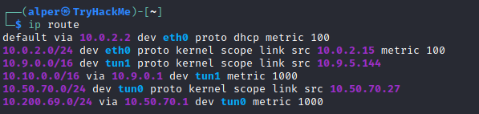
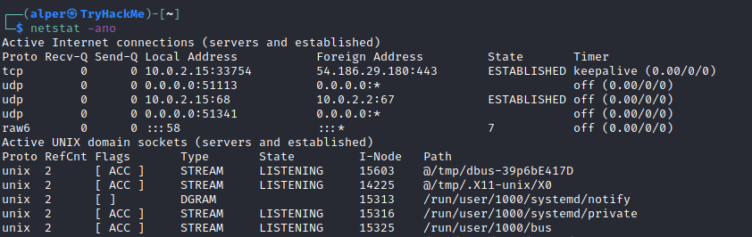

Enumeration
Enumeration is the first step you have to take once you gain access to any system. You may have accessed the system by exploiting a critical vulnerability that resulted in root-level access or just found a way to send commands using a low privileged account. Penetration testing engagements, unlike CTF machines, don't end once you gain access to a specific system or user privilege level. As you will see, enumeration is as important during the post-compromise phase as it is before.
hostname
The
hostname command will return the hostname of the target machine. Although this value can easily be changed or have a relatively meaningless string (e.g. Ubuntu-3487340239), in some cases, it can provide information about the target system’s role within the corporate network (e.g. SQL-PROD-01 for a production SQL server).uname -a
Will print system information giving us additional detail about the kernel used by the system. This will be useful when searching for any potential kernel vulnerabilities that could lead to privilege escalation.
/proc/version
The proc filesystem (procfs) provides information about the target system processes. You will find proc on many different Linux flavours, making it an essential tool to have in your arsenal.
Looking at
/proc/version may give you information on the kernel version and additional data such as whether a compiler (e.g. GCC) is installed. /etc/issue
Systems can also be identified by looking at the
/etc/issue file. This file usually contains some information about the operating system but can easily be customized or changed. While on the subject, any file containing system information can be customized or changed. For a clearer understanding of the system, it is always good to look at all of these.ps Command
The
ps command is an effective way to see the running processes on a Linux system. Typing ps on your terminal will show processes for the current shell. The output of the
ps (Process Status) will show the following;• PID: The process ID (unique to the process)
• TTY: Terminal type used by the user
• Time: Amount of CPU time used by the process (this is NOT the time this process has been running for)
• CMD: The command or executable running (will NOT display any command line parameter)
The “ps” command provides a few useful options.
◇
ps -A: View all running processes◇
ps axjf: View process tree (see the tree formation until ps axjf is run below){kind=link}
◇
ps aux: The aux option will show processes for all users (a), display the user that launched the process (u), and show processes that are not attached to a terminal (x). Looking at the ps aux command output, we can have a better understanding of the system and potential vulnerabilities.env
The
env command will show environmental variables.{kind=link}
The PATH variable may have a compiler or a scripting language (e.g. Python) that could be used to run code on the target system or leveraged for privilege escalation.
sudo -l
The target system may be configured to allow users to run some (or all) commands with root privileges. The
sudo -l command can be used to list all commands your user can run using sudo.ls
One of the common commands used in Linux is probably
ls.While looking for potential privilege escalation vectors, please remember to always use the
ls command with the -la parameter. The example below shows how the “secret.txt” file can easily be missed using the ls or ls -l commands.{kind=link}
Id
The
id command will provide a general overview of the user’s privilege level and group memberships. It is worth remembering that the
id command can also be used to obtain the same information for another user as seen below.{kind=link}
/etc/passwd
Reading the
/etc/passwd file can be an easy way to discover users on the system. {kind=link}
While the output can be long and a bit intimidating, it can easily be cut and converted to a useful list for brute-force attacks.
{kind=link}
Remember that this will return all users, some of which are system or service users that would not be very useful. Another approach could be to grep for “home” as real users will most likely have their folders under the “home” directory.
{kind=link}
history
Looking at earlier commands with the
history command can give us some idea about the target system and, albeit rarely, have stored information such as passwords or usernames. ifconfig
The target system may be a pivoting point to another network. The
ifconfig command will give us information about the network interfaces of the system. The example below shows the target system has three interfaces (eth0, tun0, and tun1). Our attacking machine can reach the eth0 interface but can not directly access the two other networks. {kind=link}
This can be confirmed using the
ip route command to see which network routes exist. 
{kind=link}
netstat
Following an initial check for existing interfaces and network routes, it is worth looking into existing communications. The
netstat command can be used with several different options to gather information on existing connections. ◇
netstat -a: showsall listening ports and established connections.◇
netstat -at ornetstat -au can also be used to list TCP or UDP protocols respectively.◇
netstat -l: list ports in “listening” mode. These ports are open and ready to accept incoming connections. This can be used with the “t” option to list only ports that are listening using the TCP protocol (below){kind=link}
◇
netstat -s: list network usage statistics by protocol (below) Thiscan also be used with the -t or -u options to limit theoutput to a specific protocol. 
◇
netstat -tp: list connections with the service name and PIDinformation.{kind=link}
This can also be used with the
-l option to list listening ports (below){kind=link}
We can see the “PID/Program name” column is empty as this process is owned by another user.
Below is the same command run with root privileges and reveals this information as 2641/nc (netcat)
{kind=link}
◇
netstat -i: Shows interface statistics. We see below that “eth0” and “tun0” are more active than “tun1”.{kind=link}
The
netstat usage you will probably see most often in blog posts, write-ups, and courses is netstat -ano which could be broken down as follows;◇
-a: Display allsockets◇
-n: Do not resolvenames◇
-o: Display timers
{kind=link}
find Command
Searching the target system for important information and potential privilege escalation vectors can be fruitful. The built-in “find” command is useful and worth keeping in your arsenal.
Below are some useful examples for the “find” command.
Find files:
◇
find . -name flag1.txt: find the file named “flag1.txt” in thecurrent directory◇
find /home -name flag1.txt: find the file names “flag1.txt” inthe /home directory◇
find / -type d -name config: find the directory named config under “/”◇
find / -type f -perm 0777: find files with the 777 permissions(files readable, writable, and executable by all users)◇
find / -perm a=x: find executable files◇
find /home -user frank: find all files for user “frank” under“/home”◇
find / -mtime 10: find files that were modified in the last 10days◇
find / -atime 10: find files that were accessed in the last 10day◇
find / -cmin -60: find files changed within the last hour (60minutes)◇
find / -amin -60: find files accesses within the last hour (60minutes)◇
find / -size 50M: find files with a 50 MB sizeThis command can also be used with (+) and (-) signs to specify a file that is larger or smaller than the given size.

The example above returns files that are larger than 100 MB. It is important to note that the “find” command tends to generate errors which sometimes makes the output hard to read. This is why it would be wise to use the “find” command with “-type f 2>/dev/null” to redirect errors to “/dev/null” and have a cleaner output (below).
{kind=link}
Folders and files that can be written to or executed from:
◇
find / -writable -type d 2>/dev/null : Find world-writeablefolders◇
find / -perm -222 -type d 2>/dev/null: Find world-writeablefolders◇
find / -perm -o w -type d 2>/dev/null: Find world-writeablefoldersThe reason we see three different “find” commands that could potentially lead to the same result can be seen in the manual document. As you can see below, the perm parameter affects the way “find” works.
{kind=link}
◇
find /-perm -o x -type d 2>/dev/null : Find world-executable foldersFind development tools and supported languages:
◇
find / -name perl*◇
find / -name python*◇
find / -name gcc*Find specific file permissions:
Below is a short example used to find files that have the SUID bit set. The SUID bit allows the file to run with the privilege level of the account that owns it, rather than the account which runs it. This allows for an interesting privilege escalation path,we will see in more details on task 6. The example below is given to complete the subject on the “find” command.
◇
find / -perm -u=s -type f 2>/dev/null: Find files with the SUIDbit, which allows us to run the file with a higher privilege levelthan the current user. General Linux Commands
As we are in the Linux realm, familiarity with Linux commands, in general, will be very useful. Please spend some time getting comfortable with commands such as
find, locate, grep, cut, sort, etc.